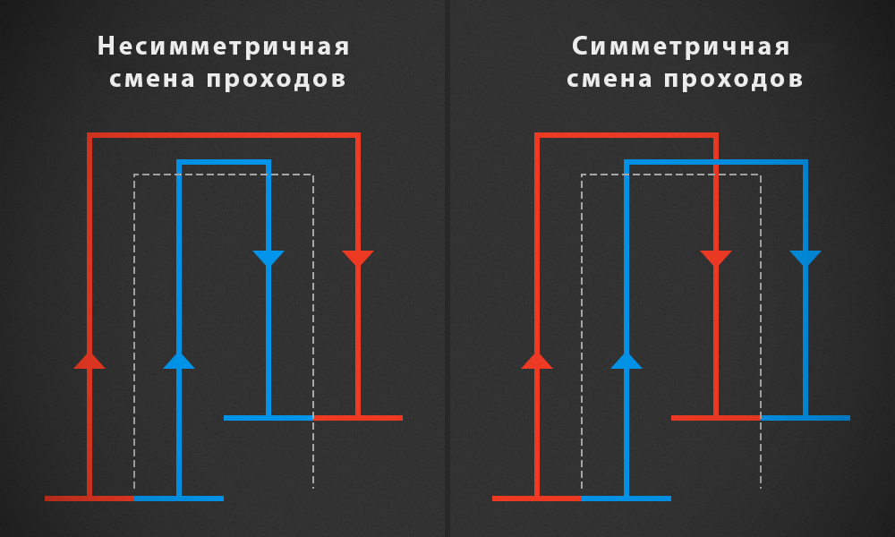

Ошибки и предложения рассматриваются на нашей странице проблем.
Всегда обновляйтесь до последней сборки и проверяйте, действительно ли проблема существует прежде чем сообщать о ней.
Проверьте, была ли ваша проблема уже сообщена кем-то другим. Если это так, внесите вклад в обсуждение этой проблемы, а не создавайте новую тему.
Пишите на английском. У нас есть пользователи (и разработчики) со всего мира. И, написав на английском языке, вы поможете им (и нам) понять и, возможно, даже способствовать решению.
Будьте понятны и кратки: используйте четкие названия без написания целого романа. В текстовой области опишите ситуацию как можно точнее. Сообщите нам, какую карту и какие транспортные средства и моды вы используете.
Загрузить log:
Перейдите в Gist или Pastebin и добавьте свой лог-файл, либо скопировав и вставив в текст сообщения, либо перетащив файл log.txt в текстовую область (только Gist).
Разместите ссылку на лог-файл в описании проблемы.
Сообщите версию Courseplay, которую вы используете. Вы можете узнать её либо в лог-файле (### Courseplay: initialized 37/37 files (v5.01.0075)), либо в игре в нижнем правом углу HUD-а Courseplay.
Какие инструменты и транспортные средства поддерживает Courseplay?
Courseplay поддерживает всё оборудование и инструменты которые есть в игре по умолчанию, за исключением прицепов для воды и топлива. Мы также поддерживаем все моды, которые используют сценарии игры по умолчанию.
Примечание: Courseplay не автоматизирует спил и очистку деревьев.
Кроме того, мы специально поддерживаем следующие моды (действительно с v5.01):
DriveControl от upsidedown
Как использовать смещение? — или как мне организовать одновременную работу нескольких инструментов?
Поперечное смещение можно использовать для двух разных ситуаций:
Рабочий инструмент, который вы используете, не является симметричным, поэтому вам нужно слегка сместится левее или правее, чтобы инструмент находился по центру пути. Это относится, например, к загрузчикам тюков, боковым косилкам или некоторым тюкопрессам. В этом случае используйте настройку смещение оборудования.
Вы хотите использовать несколько транспортных средств, чтобы двигаться бок о бок, чтобы быстрее работать на поле. В этом случае используйте настройку смещения проходов.
Асимметричное оборудование (смещение оборудования)
По оси X вычислить (или, по крайней мере, оценить) расстояние между точкой, где инструмент должен "попадать" на путь и центром транспортного средства. Используйте это расстояние как поперечное смещение. Например, погрузчик тюков по умолчанию (Arcusin) требует смещения приблизительно от 1,5 до 2 метров влево (поскольку захват находится на правой стороне инструмента).
Совместная работа (смещение проходов)
Чтобы несколько транспортных средств работали совместно, убедитесь в следующем:
Каждый трактор/комбайн использует одно и то же оборудование, с одинаковой рабой шириной.
Не запускайте всю технику в один момент. Если вы это сделаете, они в какой-то момент застрянут с другой техникой из группы.
Если ширина рабочей области инструмента не является целым числом (целое число вроде 6, 8, 12) но содержит десятичные части (например 7,5; 3,4), для вычисления смещения используйте допустимое ближайшее меньшее значение рабочей ширины. Причиной этого является установленное нами ограничение, которое допускает только шаг настройки смещения в 0,5.
Каждое транспортное средство должно использовать один и тот же сгенерированный маршрут. Рабочая ширина маршрута должна быть равной рабочей ширине инструмента, умноженной на количество транспортных средств. Например, когда вы используете две сеялки с рабочей шириной 6 м, рабочая ширина маршрута должна быть равна 12 м - повторимся: каждый инструмент должен использовать маршрут в 12 м (общая рабочая ширина).
На примере нашей сеялки, транспортное средство №1 будет двигаться с левой стороны курса со смещением -3 метра, транспортное средство №2 будет ехать с правой стороны курса со смещением в 3 метра.
Симметричная и несимметричная смена проходов
Существует два метода перехода с прохода на проход: несимметричная и симметричная смена проходов
Несимметричная смена проходов: в то время как по первому проходу они будут двигаться бок о бок, помните, что их положение относительно пути всегда будет слева/справа от маршрута. Поэтому в следующем проходе они будут меняться друг с другом положением, но на самом деле они все равно останутся слева/справа от пути.
Симметричная смена проходов: транспортные средства всегда пропускают свободный проход для следующего транспортного средства.

Несимметричная и симметричная смена проходов.Несимметричная смена проходовСимметричная смена проходов
Расчет смещения проходов
Формула для расчета смещения:
пусть num будет количеством работающих орудий
пусть pos будет позицией транспортного средства (№1, №2, №3, …)
пусть ww будет рабочая ширина оборудования
смещение оборудования будет равняться:
(pos - ((num + 1) / 2)) * ww
Мы также создали калькулятор расчета правильных настроек смещения при работе нескольких орудий: